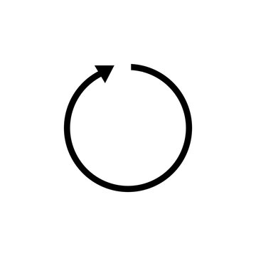

Jared Weissberg
I’m Jared Weissberg, a classical cellist and Stanford alumnus (BA + MSCS, 3 years, 4.0). I taught CS229, received an offer to join Goldman Sachs, and performed at Carnegie Hall.
Here’s me at Carnegie Hall. They asked me to come back, and I might take them up on it. I also love Tchaikovsky’s Rococo Variations and Bach Suite No. 3, Prelude.
From there, I went to Stanford and completed my economics (BA) and computer science (MS) in 3 years with a 4.0. During that time, I did research across several Stanford labs in robotics and AI, including SAIL, with professors Chris Re, Azalia Mirhoseini, Shuran Song, Priscilla Yang, and Andrew Maas, alongside some amazing PhDs and postdocs. I also worked with some great people at Meta.
Here are some recent papers:
- A Study of Visuomotor Behavior Cloning: Performance Considering Real-Time Requirements
- A Spectrogram is Worth 16 x 16 Words: Vision Transformers for Spoken Language Understanding
- Visuomotor Behavior Cloning Example
In my third year, I taught CS229, Stanford’s famous machine learning class, as well as CS224S and CS256. I created and led select lectures, wrote the exams, and held sections.
I also worked on a few economics questions with Professors Nicholas Bloom and Caroline Hoxby:
- Examining the Effect of the Number of Arts Teachers on the Number of 2-Year and 4-Year Arts Degree Completions Across California Counties
- How Do Establishment Size, Industry Size, and Minimum Wage Help Explain the Post-2015 Structural Shift in Wage Inequality Between Digital and Non-Digital Firms?
I worked at Goldman Sachs, Morgan Stanley, and a couple of startups and venture firms.
In my free time, I founded Stanford’s first quantitative venture fund, was involved with the Stanford Cowell Fund, played in the symphony, and spent a few months at the London School of Economics.
I also care a lot about giving back to my community. In high school, I founded and led a food insecurity nonprofit , which fed tens of thousands of students.
At heart, I am a classical cellist. I was principal cellist of Orange County School of the Arts and the Orange County Youth Symphony, and I traveled the world as a soloist with orchestra throughout high school.
I also love to cycle. Last summer I rode from Geneva to Nice, and I still occasionally spend a weekend riding from campus home to Southern California.
Some Stanford courses I really enjoyed were Math 230, CS140E, 261, 254, 231N, 224N, 224R, 205L, and 107E. That mix includes core classes for statistics PhDs, implementing an operating system from scratch, advanced algorithms, and machine learning.
For my technical projects, take a look at my GitHub. I also scored a 1590 on the SAT. Contact me if you know the Pope question.
Game Over
